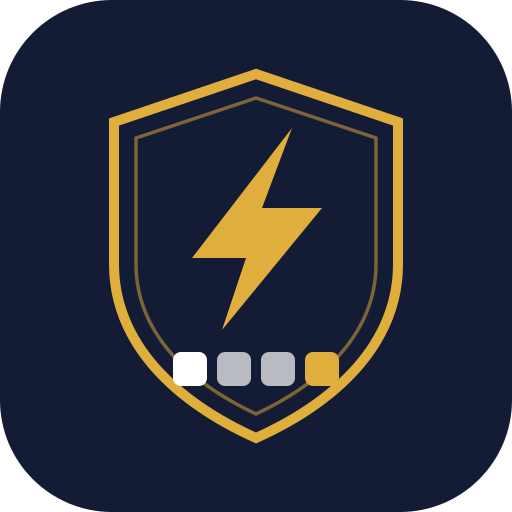

<!DOCTYPE html>
<html lang="es">
<head>
<meta charset="utf-8">
<meta name="viewport" content="width=device-width, initial-scale=1, viewport-fit=cover">
<meta name="theme-color" content="#29235C">
<link rel="manifest" href="manifest.json">
<link rel="icon" type="image/svg+xml" href="icono.svg">
<link rel="icon" type="image/png" sizes="192x192" href="icono-192.png">
<link rel="apple-touch-icon" href="apple-touch-icon.png">
<meta name="apple-mobile-web-app-capable" content="yes">
<meta name="apple-mobile-web-app-status-bar-style" content="black-translucent">
<meta name="apple-mobile-web-app-title" content="OB Educativo">
<meta name="mobile-web-app-capable" content="yes">
<title>Or Barak · Trabajo Social</title>
<link rel="preconnect" href="https://fonts.googleapis.com">
<link rel="preconnect" href="https://fonts.gstatic.com" crossorigin>
<link rel="stylesheet" href="https://fonts.googleapis.com/css2?family=Mulish:wght@400;600;700;800&family=Archivo+Narrow:wght@500;600;700&family=Montserrat:wght@500;600;700&display=swap">
<style>
:root{
  /* Or Barak — dos colores de marca (Pantone 3581 C / 7407 C) */
  --tinta:#29235C; --noche:#3C3479; --ambar:#C99B52; --ambar-suave:#F9F2E4;
  --fondo:#F6F6F5; --blanco:#fff; --linea:#D5D6D7; --texto:#3E4140; --suave:#747779;
  --rojo:#8C3A32; --rojo-suave:#F8F0EF; --verde:#3F6B4E; --verde-suave:#EEF3EF;
  --azul:#3C3479; --azul-suave:#EFEEF6;
  --oro-linea:#E7CFA5; --rojo-linea:#E3CBC8; --azul-linea:#CFCCE3;
  --hueco:#F3F2F8; --borde-campo:#C6C2DC; --tenue:#C6C2DC;
  --display:"Mulish",-apple-system,BlinkMacSystemFont,"Segoe UI",sans-serif;
  --rotulo:"Archivo Narrow",-apple-system,"Segoe UI",sans-serif;
  --cifra:"Montserrat",-apple-system,"Segoe UI",sans-serif;
  --sombra:0 1px 2px rgba(41,35,92,.07);
  --paso:140ms cubic-bezier(.4,0,.2,1);
}
*{box-sizing:border-box;-webkit-tap-highlight-color:transparent}
body{margin:0;background:var(--fondo);color:var(--texto);
  font-family:var(--display);font-size:16px;line-height:1.55;text-wrap:pretty;
  -webkit-font-smoothing:antialiased}
h1,h2,h3{font-family:var(--display);font-weight:700;margin:0;color:var(--tinta);letter-spacing:-.01em}
button,input,select,textarea{font:inherit;color:inherit}
a{color:var(--tinta)} a:hover{color:#8E6A2E}

/* ---------- estructura ---------- */
header{position:sticky;top:0;z-index:20;background:var(--tinta);color:#fff;
  padding:calc(env(safe-area-inset-top) + 14px) 16px 0;border-bottom:2px solid var(--ambar)}
.cabeza{display:flex;align-items:center;gap:11px;padding-bottom:12px}
.cabeza img{width:38px;height:38px;display:block;flex:0 0 auto}
.marca{font-family:var(--display);font-size:20px;font-weight:700;letter-spacing:-.01em;line-height:1.1}
.sub{font-family:var(--rotulo);font-size:11px;font-weight:600;letter-spacing:.18em;
  text-transform:uppercase;color:var(--ambar);margin-top:3px}
.quien{font-family:var(--rotulo);font-size:12px;letter-spacing:.06em;color:var(--tenue);
  margin-left:auto;text-align:right;max-width:46%;line-height:1.4}
main{padding:18px 16px calc(env(safe-area-inset-bottom) + 104px);max-width:640px;margin:0 auto}

/* ---------- piezas ---------- */
.tarjeta{background:var(--blanco);border:1px solid var(--linea);border-radius:4px;
  padding:15px;margin-bottom:12px;box-shadow:var(--sombra)}
.eti{font-family:var(--rotulo);font-size:11px;font-weight:600;letter-spacing:.16em;
  text-transform:uppercase;color:var(--suave)}
.chip{display:inline-flex;align-items:center;gap:4px;border:1px solid;border-radius:2px;
  padding:3px 8px;font-family:var(--rotulo);font-size:11px;font-weight:600;
  letter-spacing:.1em;text-transform:uppercase;line-height:1.3}
.chip.amb{background:var(--ambar-suave);border-color:var(--oro-linea);color:#8E6A2E}
.chip.azu{background:var(--azul-suave);border-color:var(--azul-linea);color:var(--azul)}
.chip.ver{background:var(--verde-suave);border-color:#CBDBD1;color:var(--verde)}
.chip.roj{background:var(--rojo-suave);border-color:var(--rojo-linea);color:var(--rojo)}
.chip.gri{background:var(--hueco);border-color:var(--linea);color:var(--suave)}

button.b{border:0;border-radius:2px;padding:13px 16px;cursor:pointer;
  font-family:var(--rotulo);font-size:15px;font-weight:600;letter-spacing:.09em;text-transform:uppercase;
  display:inline-flex;align-items:center;justify-content:center;gap:6px;width:100%;
  transition:background var(--paso),color var(--paso),opacity var(--paso)}
button.b.primario{background:var(--tinta);color:#fff}
button.b.primario:hover{background:#1D1940}
button.b.ambar{background:var(--ambar);color:var(--tinta)}
button.b.ambar:hover{background:#AC8340}
button.b.claro{background:var(--blanco);color:var(--tinta);border:1px solid var(--borde-campo)}
button.b.claro:hover{background:var(--hueco)}
button.b:active{opacity:.88}
button.b:disabled{opacity:.4}
.fila-botones{display:flex;gap:8px}

label.campo{display:block;margin-bottom:15px}
label.campo>span{display:block;font-family:var(--rotulo);font-size:11px;font-weight:600;
  letter-spacing:.16em;text-transform:uppercase;color:var(--suave);margin-bottom:6px}
input.c,select.c,textarea.c{width:100%;padding:12px;border:1px solid var(--borde-campo);border-radius:2px;
  background:#fff;font-size:16px;font-family:var(--display);
  transition:border-color var(--paso),box-shadow var(--paso)}
textarea.c{resize:vertical;min-height:88px;line-height:1.55}
input.c:focus,select.c:focus,textarea.c:focus{outline:0;border-color:var(--tinta);
  box-shadow:0 0 0 3px rgba(201,155,82,.45)}

.tabs{display:flex;gap:20px;margin-bottom:16px;overflow-x:auto;border-bottom:1px solid var(--linea)}
.tabs button{flex:0 0 auto;border:0;border-bottom:2px solid transparent;background:none;
  color:var(--suave);padding:0 0 9px;cursor:pointer;
  font-family:var(--rotulo);font-size:14px;font-weight:600;letter-spacing:.1em;text-transform:uppercase;
  transition:color var(--paso),border-color var(--paso)}
.tabs button[aria-selected="true"]{color:var(--tinta);border-bottom-color:var(--ambar)}

.caso{background:#fff;border:1px solid var(--linea);border-radius:4px;padding:15px;margin-bottom:10px;
  width:100%;text-align:left;cursor:pointer;display:block;box-shadow:var(--sombra);
  transition:border-color var(--paso)}
.caso:hover{border-color:var(--tenue)}
.caso.urgente{border-top:3px solid var(--rojo)}
.caso .nombre{font-family:var(--display);font-weight:700;color:var(--tinta);font-size:17px}
.caso .meta{font-family:var(--cifra);font-size:11.5px;font-weight:500;letter-spacing:.03em;
  color:var(--suave);margin-top:3px}
.caso .motivo{margin-top:9px;font-size:14.5px;color:var(--texto);
  display:-webkit-box;-webkit-line-clamp:2;-webkit-box-orient:vertical;overflow:hidden}
.tags{display:flex;flex-wrap:wrap;gap:6px;margin-top:10px}

.fab{position:fixed;right:16px;bottom:calc(env(safe-area-inset-bottom) + 20px);z-index:15;
  background:var(--ambar);color:var(--tinta);border:0;border-radius:2px;padding:15px 22px;
  font-family:var(--rotulo);font-size:15px;font-weight:700;letter-spacing:.09em;text-transform:uppercase;
  box-shadow:0 4px 14px rgba(41,35,92,.22);cursor:pointer;transition:background var(--paso)}
.fab:hover{background:#AC8340}

.volver{background:none;border:0;color:var(--suave);font-family:var(--rotulo);font-size:12px;
  font-weight:600;letter-spacing:.14em;text-transform:uppercase;padding:0 0 12px;cursor:pointer}
.bloque{border-left:2px solid var(--ambar);padding-left:13px;margin-top:12px}
.reservado{border:1px dashed var(--borde-campo);background:var(--hueco);border-radius:4px;padding:12px;
  font-size:13.5px;color:var(--suave);width:100%;text-align:left;cursor:pointer}
.linea-tiempo{border-top:1px solid var(--linea);padding-top:12px;margin-top:12px}
.vacio{text-align:center;color:var(--suave);font-size:14px;padding:36px 16px;
  border:1px dashed var(--borde-campo);border-radius:4px;background:#fff}

.velo{position:fixed;inset:0;background:rgba(41,35,92,.55);backdrop-filter:blur(2px);
  z-index:40;display:flex;align-items:flex-end}
.hoja{background:#fff;width:100%;max-height:92vh;overflow-y:auto;border-radius:4px 4px 0 0;
  padding:20px 16px calc(env(safe-area-inset-bottom) + 20px);border-top:2px solid var(--ambar)}
.hoja h2{font-size:21px;color:var(--tinta);margin-bottom:10px;position:relative;padding-bottom:12px}
.hoja h2::after{content:"";position:absolute;left:0;bottom:0;width:56px;height:2px;background:var(--ambar)}
.hoja .desc{font-size:13.5px;color:var(--suave);margin-bottom:18px}
.seg{display:flex;gap:8px;margin-bottom:15px}
.seg button{flex:1;border:1px solid var(--borde-campo);background:#fff;border-radius:2px;padding:11px;
  font-family:var(--rotulo);font-size:14px;font-weight:600;letter-spacing:.07em;text-transform:uppercase;
  color:var(--suave);cursor:pointer;transition:background var(--paso),color var(--paso)}
.seg button[aria-pressed="true"]{background:var(--tinta);border-color:var(--tinta);color:#fff}
.check{display:flex;gap:10px;align-items:flex-start;background:var(--hueco);border:1px solid var(--linea);
  border-radius:4px;padding:12px;margin-bottom:15px;font-size:14px}
.check input{margin-top:3px;width:18px;height:18px;accent-color:var(--tinta)}

.aviso{background:var(--rojo-suave);border:1px solid var(--rojo-linea);color:var(--rojo);border-radius:4px;
  padding:12px;font-size:14px;margin-bottom:15px}
.nav-sec{display:flex;gap:22px;margin-top:2px}
.nav-sec button{background:none;border:0;border-bottom:2px solid transparent;color:var(--tenue);
  padding:0 0 10px;cursor:pointer;
  font-family:var(--rotulo);font-size:14px;font-weight:600;letter-spacing:.11em;text-transform:uppercase;
  transition:color var(--paso),border-color var(--paso)}
.nav-sec button[aria-current="true"]{color:#fff;border-bottom-color:var(--ambar)}

.alum{background:#fff;border:1px solid var(--linea);border-radius:4px;padding:14px 15px;margin-bottom:9px;
  width:100%;text-align:left;cursor:pointer;display:flex;align-items:center;justify-content:space-between;
  gap:10px;box-shadow:var(--sombra);transition:border-color var(--paso)}
.alum:hover{border-color:var(--tenue)}
.alum .n{font-weight:700;color:var(--tinta)}
.alum .m{font-family:var(--cifra);font-size:11.5px;font-weight:500;color:var(--suave);margin-top:3px}

.pasos{display:flex;gap:4px;margin-bottom:16px}
.pasos i{flex:1;height:3px;background:var(--linea)}
.pasos i.on{background:var(--ambar)}
.pasos i.done{background:var(--tinta)}
.guia{background:#fff;border:1px solid var(--linea);border-top:3px solid var(--ambar);
  border-radius:0 0 4px 4px;padding:15px;margin-bottom:14px;box-shadow:var(--sombra)}
.guia ol{margin:9px 0 0;padding-left:20px;font-size:15px}
.guia li{margin-bottom:8px}
.ind{background:#fff;border:1px solid var(--linea);border-radius:4px;padding:14px;margin-bottom:10px;
  box-shadow:var(--sombra)}
.ind .t{font-weight:700;color:var(--tinta);font-size:15px}
.ind .o{font-size:13.5px;color:var(--suave);margin-top:3px}
.puntos{display:flex;gap:5px;margin-top:11px}
.puntos button{flex:1;border:1px solid var(--borde-campo);background:#fff;color:var(--suave);border-radius:2px;
  padding:10px 0;font-family:var(--cifra);font-size:15px;font-weight:600;cursor:pointer;
  transition:background var(--paso),color var(--paso)}
.puntos button[aria-pressed="true"]{background:var(--tinta);border-color:var(--tinta);color:#fff}
.puntos button.nd{font-family:var(--rotulo);letter-spacing:.06em;text-transform:uppercase}
.puntos button.nd[aria-pressed="true"]{background:var(--suave);border-color:var(--suave)}
.barra-alarma{width:100%;background:var(--rojo-suave);border:1px solid var(--rojo-linea);color:var(--rojo);
  border-radius:4px;padding:11px;font-size:13.5px;font-weight:600;margin-bottom:15px;cursor:pointer;text-align:left}
.perfil{width:100%;border-collapse:collapse;font-size:14px}
.perfil td{padding:10px 4px;border-bottom:1px solid var(--linea)}
.perfil td.num{text-align:right;font-family:var(--cifra);font-weight:600;color:var(--tinta);width:76px}
.perfil td.sem{width:96px;text-align:right}
.marca-tot{background:var(--ambar-suave)}
.marca-tot td{font-weight:700;border-bottom:0}
.opciones{display:flex;flex-wrap:wrap;gap:7px;margin-bottom:15px}
.opciones button{border:1px solid var(--borde-campo);background:#fff;border-radius:2px;padding:9px 13px;
  font-family:var(--rotulo);font-size:13.5px;font-weight:600;letter-spacing:.06em;text-transform:uppercase;
  color:var(--suave);cursor:pointer;transition:background var(--paso),color var(--paso)}
.opciones button[aria-pressed="true"]{background:var(--tinta);border-color:var(--tinta);color:#fff}
.acceso{max-width:352px;margin:12vh auto 0;text-align:center;padding:0 4px}
.acceso img{width:76px;height:76px;display:block;margin:0 auto 20px}
.acceso h1{font-size:28px;color:var(--tinta)}
.acceso p{color:var(--suave);font-family:var(--rotulo);font-size:12px;font-weight:600;
  letter-spacing:.18em;text-transform:uppercase;margin:8px 0 26px}
.acceso label.campo>span{text-align:left}
#pin{text-align:center;letter-spacing:.5em;font-family:var(--cifra);font-size:24px;padding:15px}
.cargando{text-align:center;color:var(--suave);font-family:var(--rotulo);font-size:13px;
  letter-spacing:.14em;text-transform:uppercase;padding:44px}
@media (prefers-reduced-motion:no-preference){
  .velo{animation:aparece 140ms cubic-bezier(.4,0,.2,1)}
  @keyframes aparece{from{opacity:0}to{opacity:1}}
}
</style>
</head>
<body>

<div id="app"></div>
<div id="capa"></div>

<script>
/* ============================================================
   CONFIGURACIÓN — pega aquí la URL /exec de tu Apps Script
   ============================================================ */
const API = "https://script.google.com/macros/s/AKfycbwgi4oGGZgHRhZ1F4wmKa_JRZODyAdJKgmiRh9IhoYIPW7aVeWO0YGPuYBPLwhGKb8RNA/exec";

/* ------------------------------------------------------------ */
let PIN = null, D = null, vista = "lista", casoId = null, tab = "pendientes";
let seccion = "casos", paso = 0, borrador = null;

try { PIN = sessionStorage.getItem("ob_ts_pin"); } catch (e) {}

const app = () => document.getElementById("app");
const capa = () => document.getElementById("capa");
const esc = (t) => String(t == null ? "" : t).replace(/[&<>"]/g, c => ({ "&":"&amp;","<":"&lt;",">":"&gt;",'"':"&quot;" }[c]));

const dias = (f) => f ? Math.floor((Date.now() - new Date(f + "T12:00:00").getTime()) / 86400000) : null;
const fmt = (f) => f ? new Date(f + "T12:00:00").toLocaleDateString("es-MX",{day:"numeric",month:"short",year:"numeric"}) : "—";
const hoy = () => new Date().toISOString().slice(0,10);
const si = (v) => String(v).toLowerCase() === "si" || v === true;

const alumno = (id) => (D?.alumnos || []).find(a => a.id === id)?.nombre || "Alumno";
const persona = (id) => (D?.equipo || []).find(m => m.id === id)?.nombre || "Sin asignar";

const INSTRUMENTO = {
  trayectoria: {
    titulo: "Trayectoria escolar",
    nota: "No se califica: es el contexto con el que se leen los demás bloques. Entiende qué se rompió y de quién sintió él que fue la culpa.",
    preguntas: [
      "¿En qué escuelas has estado? Vamos desde la primera.",
      "¿Por qué saliste de cada una? ¿Cómo te lo explicaron a ti?",
      "¿Hubo algún año en que te quedaste sin escuela o repetiste?",
      "¿Cuál fue el mejor momento que recuerdas de la escuela? ¿Y el peor?",
      "¿Hubo algún maestro con el que sí te llevabas bien? ¿Qué hacía distinto?",
      "¿Qué te dijeron de Or Barak antes de venir? ¿Qué esperas de aquí?"
    ],
    campos: [
      { k: "escuelas", e: "Escuelas anteriores (número)" },
      { k: "repetidos", e: "Años repetidos o interrumpidos" },
      { k: "salida", e: "Motivo principal de la última salida" },
      { k: "adulto", e: "¿Hubo un adulto que lo sostuvo?" }
    ]
  },
  dimensiones: [
    { k: "academico", titulo: "Académico",
      nota: "El problema casi nunca es la capacidad: es lo que ya decidió sobre sí mismo.",
      preguntas: [
        "¿Qué materia se te da bien? ¿Cuál se te complica más?",
        "Cuando no entiendes algo en clase, ¿qué haces?",
        "¿Cómo estudias para un examen? Cuéntame la última vez.",
        "¿Cómo te va con la lectura? ¿Y con el texto en lashón hakodesh?",
        "¿Alguien te ayuda con la tarea en tu casa? ¿Quién?",
        "Si te dijeran que puedes sacar buenas calificaciones, ¿lo creerías?"
      ],
      indicadores: [
        { k: "autoconcepto", n: "Autoconcepto académico", o: "Si se cree capaz de aprender o ya se rindió consigo mismo." },
        { k: "habitos", n: "Hábitos y organización", o: "Si tiene alguna manera de estudiar, o solo improvisa." },
        { k: "ayuda", n: "Pedir ayuda", o: "Si puede decir “no entendí” o lo esconde para no exponerse." },
        { k: "lectura", n: "Comprensión lectora", o: "Cómo se ve leyendo, en español y en el texto de kodesh." },
        { k: "apoyocasa", n: "Apoyo académico en casa", o: "Si hay alguien en casa que pueda acompañar el estudio." }
      ] },
    { k: "emocional", titulo: "Emocional y autoconcepto",
      nota: "Se pregunta cómo se siente y a quién recurre. No es un tamizaje clínico: si suena a más de lo que este formato sostiene, se canaliza.",
      preguntas: [
        "Si un amigo tuyo tuviera que describirte, ¿qué diría de ti?",
        "¿Qué es lo que mejor te sale, dentro o fuera de la escuela?",
        "Cuando algo te sale mal, ¿qué te dices a ti mismo?",
        "¿Qué te enoja? ¿Y qué haces cuando te enojas?",
        "Cuando estás mal, ¿con quién hablas? ¿Hay alguien aquí en la escuela?",
        "¿Cómo has estado de ánimo estas últimas semanas?",
        "¿Cómo te imaginas dentro de tres años?"
      ],
      indicadores: [
        { k: "autoestima", n: "Autoestima", o: "Si encuentra algo bueno que decir de sí mismo." },
        { k: "frustracion", n: "Tolerancia a la frustración", o: "Qué hace cuando algo sale mal: insiste, se paraliza o explota." },
        { k: "red", n: "Red de confianza", o: "Si tiene al menos alguien a quien acudir. Un cero aquí es señal fuerte." },
        { k: "animo", n: "Ánimo general", o: "Cómo se ha sentido últimamente, en sus propias palabras." },
        { k: "futuro", n: "Expectativa de futuro", o: "Si logra imaginarse un después." }
      ] },
    { k: "conductual", titulo: "Conducta y autorregulación",
      nota: "Interesa el mecanismo, no la lista de castigos: qué lo enciende, qué lo calma, qué hace ante un límite.",
      preguntas: [
        "¿Por qué cosas te has metido en problemas en la escuela?",
        "Cuando un maestro te llama la atención, ¿qué pasa por tu cabeza?",
        "¿Te has peleado? ¿Cómo empezó la última vez?",
        "¿A qué hora te duermes? ¿A qué hora te despiertas?",
        "¿Cuánto tiempo pasas en el celular al día? ¿Qué haces ahí?",
        "¿Has probado alcohol, cigarro o algo más? Te pregunto para saber cómo ayudarte, no para reportarte."
      ],
      indicadores: [
        { k: "limite", n: "Respuesta al límite", o: "Si puede recibir una corrección sin romper la relación." },
        { k: "regulacion", n: "Autorregulación", o: "Qué tanto media entre el impulso y la acción." },
        { k: "asistencia", n: "Asistencia y puntualidad", o: "Historial y disposición a sostener un horario." },
        { k: "rutina", n: "Sueño y pantallas", o: "La rutina básica que sostiene todo lo demás." },
        { k: "consumo", n: "Consumo", o: "Cualquier indicio de consumo frecuente se canaliza aparte, no se detalla aquí." }
      ] },
    { k: "familiar", titulo: "Familia y red de apoyo",
      nota: "Sin juzgar a la casa delante del alumno. Se busca saber qué se le puede pedir a la familia y qué no tiene caso pedirle.",
      preguntas: [
        "¿Con quién vives?",
        "En un día normal, ¿quién está en tu casa cuando llegas?",
        "¿Con quién de tu familia hablas mejor?",
        "¿Saben tus papás cómo te va aquí? ¿Cómo se enteran?",
        "¿Hay algo en tu casa que te esté costando trabajo ahorita?",
        "¿Trabajas o ayudas en algo fuera de la escuela?"
      ],
      indicadores: [
        { k: "estabilidad", n: "Estabilidad del hogar", o: "Qué tan estable es el entorno al que vuelve todos los días." },
        { k: "supervision", n: "Supervisión adulta", o: "Si hay un adulto disponible, no solo presente." },
        { k: "comunicacion", n: "Comunicación con los padres", o: "Si puede hablar con ellos de lo que le pasa." },
        { k: "coherencia", n: "Coherencia casa–escuela", o: "Si en casa se sostiene lo que la escuela pide." },
        { k: "carga", n: "Carga fuera de la escuela", o: "Trabajo, hermanos a cargo u otras responsabilidades." }
      ] },
    { k: "pertenencia", titulo: "Pertenencia, vínculo y sentido",
      nota: "La dimensión que más predice si el alumno se queda. Un solo adulto que le importe cambia el pronóstico de todo lo demás.",
      preguntas: [
        "¿Ya conoces a alguien aquí? ¿Con quién te llevas?",
        "De los adultos de la escuela, ¿con cuál te sentirías cómodo de hablar si algo pasara?",
        "¿Qué te gusta de venir aquí? ¿Qué te cuesta?",
        "¿Cómo te llevas con el tema del rezo y de las mitzvot? Te pregunto sin juzgarte.",
        "¿Hay algo que estudiaste alguna vez que sí te haya movido algo?",
        "Si pudieras cambiar una cosa de esta escuela, ¿cuál sería?"
      ],
      indicadores: [
        { k: "vinculo", n: "Vínculo con un adulto de Or Barak", o: "Si puede nombrar a alguien. Es el indicador más importante del instrumento." },
        { k: "pares", n: "Relación con los compañeros", o: "Si está integrado, aislado o en conflicto." },
        { k: "tora", n: "Relación con la Torá y las mitzvot", o: "Dónde está parado hoy, sin exigir la respuesta correcta." },
        { k: "pertenece", n: "Sentido de pertenencia", o: "Si habla de la escuela como “aquí” o como donde lo pusieron." },
        { k: "participa", n: "Disposición a participar", o: "Interés en viajes, Shabatones y vida escolar." }
      ] }
  ],
  canalizaciones: ["Tutoría reforzada", "Apoyo académico", "Trabajo con la familia",
                   "Profesional de salud mental", "Apoyo económico / beca", "Otra"]
};

const ESTADOS = {
  "abierta":    { txt:"Abierta",    cls:"amb" },
  "en proceso": { txt:"En proceso", cls:"azu" },
  "atendida":   { txt:"Atendida",   cls:"ver" }
};

/* ---------------- red ---------------- */
async function traer() {
  const r = await fetch(API + "?pin=" + encodeURIComponent(PIN));
  return r.json();
}
async function enviar(cuerpo) {
  const r = await fetch(API, { method:"POST", body: JSON.stringify({ ...cuerpo, pin: PIN }) });
  return r.json();
}
async function accion(cuerpo, boton) {
  if (boton) { boton.disabled = true; boton.textContent = "Guardando…"; }
  try {
    const res = await enviar(cuerpo);
    if (!res.ok) throw new Error(res.error || "No se pudo guardar");
    D = res;
    cerrarHoja();
    pinta();
  } catch (e) {
    alert("No se pudo guardar. Revisa la señal y vuelve a intentar.\n\n" + e.message);
    if (boton) { boton.disabled = false; boton.textContent = "Guardar"; }
  }
}

/* ---------------- acceso ---------------- */
function pantallaAcceso(error) {
  app().innerHTML = `
    <div class="acceso">
      
      <h1>Or Barak</h1>
      <p>Trabajo social</p>
      ${error ? `<div class="aviso">${esc(error)}</div>` : ""}
      <label class="campo"><span>Tu PIN</span>
        <input class="c" id="pin" type="tel" inputmode="numeric" maxlength="6" autocomplete="off" placeholder="••••">
      </label>
      <button class="b primario" id="entrar">Entrar</button>
    </div>`;
  const campo = document.getElementById("pin");
  campo.focus();
  const entrar = async () => {
    const boton = document.getElementById("entrar");
    PIN = campo.value.trim();
    if (!PIN) return;
    boton.disabled = true; boton.textContent = "Entrando…";
    try {
      const res = await traer();
      if (!res.ok) return pantallaAcceso(res.error);
      try { sessionStorage.setItem("ob_ts_pin", PIN); } catch (e) {}
      D = res; vista = "lista"; pinta();
    } catch (e) {
      pantallaAcceso("No se pudo conectar. Revisa tu señal.");
    }
  };
  document.getElementById("entrar").onclick = entrar;
  campo.onkeydown = (e) => { if (e.key === "Enter") entrar(); };
}

/* ---------------- pintar ---------------- */
function pinta() {
  if (!D) return;
  const cabeza = `
    <header>
      <div class="cabeza">
        
        <div>
          <div class="marca">Or Barak</div>
          <div class="sub">Trabajo social</div>
        </div>
        <div class="quien">${esc(D.miembro.nombre)}<br>${esc(D.miembro.rol)}</div>
      </div>
      ${vista === "instrumento" || esDocente() ? "" : `<div class="nav-sec">
        ${pestanas().map(([k, n]) => `<button data-sec="${k}" aria-current="${seccion===k}">${n}</button>`).join("")}
      </div>`}
    </header>`;
  const cuerpo = esDocente() ? vistaDocente()
    : vista === "instrumento" ? vistaInstrumento()
    : seccion === "reportes" ? vistaBandeja()
    : seccion === "diagnosticos" ? vistaDiagnosticos()
    : vista === "caso" ? vistaCaso() : vistaLista();
  app().innerHTML = cabeza + cuerpo;
  window.scrollTo(0, 0);
  conecta();
}

function vistaLista() {
  const cs = D.canalizaciones;
  const pend = cs.filter(c => c.estado !== "atendida");
  const urg = pend.filter(c => c.urgencia === "alta");
  const cerr = cs.filter(c => c.estado === "atendida");
  const lista = tab === "urgentes" ? urg : tab === "cerrados" ? cerr : pend;
  const rezago = pend.filter(c => dias(c.fecha) > 15).length;

  const orden = [...lista].sort((a,b) => {
    if (a.urgencia !== b.urgencia) return a.urgencia === "alta" ? -1 : 1;
    return String(a.fecha).localeCompare(String(b.fecha));
  });

  return `<main>
    ${rezago && tab !== "cerrados" ? `<div class="aviso">${rezago} caso${rezago>1?"s llevan":" lleva"} más de 15 días sin cerrar.</div>` : ""}
    <div class="tabs" role="tablist">
      <button role="tab" data-tab="pendientes" aria-selected="${tab==='pendientes'}">Pendientes ${pend.length}</button>
      <button role="tab" data-tab="urgentes" aria-selected="${tab==='urgentes'}">Urgentes ${urg.length}</button>
      <button role="tab" data-tab="cerrados" aria-selected="${tab==='cerrados'}">Cerrados ${cerr.length}</button>
    </div>
    ${orden.length ? orden.map(tarjetaCaso).join("") : `<div class="vacio">${
      tab === "cerrados" ? "Todavía no hay casos cerrados." : "No tienes casos en esta lista."
    }</div>`}
  </main>
  <button class="fab" data-abrir="nuevo">+ Abrir caso</button>`;
}

function tarjetaCaso(c) {
  const d = dias(c.fecha);
  const e = ESTADOS[c.estado] || ESTADOS.abierta;
  return `<button class="caso ${c.urgencia === "alta" && c.estado !== "atendida" ? "urgente" : ""}" data-caso="${c.id}">
    <div class="nombre">${esc(alumno(c.alumnoId))}</div>
    <div class="meta">${esc(c.area)} · ${fmt(c.fecha)}${c.estado !== "atendida" && d !== null ? ` · ${d} día${d===1?"":"s"}` : ""}</div>
    <div class="motivo">${esc(c.motivo)}</div>
    <div class="tags">
      <span class="chip ${e.cls}">${e.txt}</span>
      ${c.urgencia === "alta" && c.estado !== "atendida" ? `<span class="chip roj">Urgente</span>` : ""}
      ${si(c.reservada) ? `<span class="chip gri">Reservado</span>` : ""}
    </div>
  </button>`;
}

function vistaCaso() {
  const c = D.canalizaciones.find(x => x.id === casoId);
  if (!c) { vista = "lista"; return vistaLista(); }
  const e = ESTADOS[c.estado] || ESTADOS.abierta;
  const ints = (D.intervenciones || []).filter(i => i.canalizacionId === c.id)
    .sort((a,b) => String(b.fecha).localeCompare(String(a.fecha)));
  const hayCierre = (c.valoracion || "").trim() || (c.recomendaciones || "").trim();

  return `<main>
    <button class="volver" data-volver="1">← Mis casos</button>
    <div class="tarjeta">
      <h2 style="font-size:21px;color:var(--tinta)">${esc(alumno(c.alumnoId))}</h2>
      <div class="meta" style="font-size:13px;color:var(--suave);margin-top:3px">
        ${esc(c.area)} · canalizado el ${fmt(c.fecha)}
      </div>
      <div class="tags">
        <span class="chip ${e.cls}">${e.txt}</span>
        ${c.urgencia === "alta" && c.estado !== "atendida" ? `<span class="chip roj">Urgente</span>` : ""}
        ${si(c.reservada) ? `<span class="chip gri">Reservado</span>` : ""}
      </div>
      <div style="margin-top:13px"><div class="eti">Qué se observó</div>
        <p style="margin:5px 0 0;font-size:15px">${esc(c.motivo)}</p></div>
      ${c.esperado ? `<div style="margin-top:12px"><div class="eti">Qué se pidió</div>
        <p style="margin:5px 0 0;font-size:15px">${esc(c.esperado)}</p></div>` : ""}
    </div>

    ${hayCierre ? (si(c.reservada) ? `
      <button class="reservado" data-abrir-reservado="1" id="reservado">
        Valoración reservada — tócala para abrirla
      </button>
      <div class="tarjeta" id="contenido-reservado" hidden>${bloqueValoracion(c)}</div>
    ` : `<div class="tarjeta">${bloqueValoracion(c)}</div>`) : ""}

    <div class="tarjeta">
      <div class="eti">Lo que has hecho</div>
      ${ints.length ? ints.map(i => `
        <div class="linea-tiempo">
          <div style="font-weight:600;font-size:14px;color:var(--tinta)">${esc(i.tipo)}</div>
          <div style="font-size:12px;color:var(--suave)">${fmt(i.fecha)}</div>
          ${i.notas ? `<p style="margin:6px 0 0;font-size:14px">${esc(i.notas)}</p>` : ""}
        </div>`).join("")
        : `<p style="color:var(--suave);font-size:14px;margin:8px 0 0">Todavía no hay visitas ni llamadas registradas.</p>`}
    </div>

    <div class="fila-botones" style="margin-bottom:12px">
      <button class="b claro" data-abrir="intervencion">Registrar visita</button>
      <button class="b ambar" data-abrir="valoracion">${hayCierre ? "Editar valoración" : "Valoración"}</button>
    </div>
    ${c.estado !== "atendida" ? `<button class="b claro" data-cerrar-caso="1">Marcar como atendido</button>` : ""}
  </main>`;
}

function bloqueValoracion(c) {
  return `
    ${c.valoracion ? `<div class="eti">Valoración</div><p style="margin:5px 0 0;font-size:15px">${esc(c.valoracion)}</p>` : ""}
    ${c.recomendaciones ? `<div class="bloque"><div class="eti">Qué recomiendas</div>
      <p style="margin:5px 0 0;font-size:15px">${esc(c.recomendaciones)}</p></div>` : ""}
    ${c.fechaAtendida ? `<div style="margin-top:10px;font-size:12px;color:var(--suave)">Cerrado el ${fmt(c.fechaAtendida)}</div>` : ""}`;
}

/* ---------------- hojas emergentes ---------------- */
function cerrarHoja() { capa().innerHTML = ""; }

function abreHoja(html, alMontar) {
  capa().innerHTML = `<div class="velo" data-velo="1"><div class="hoja">${html}</div></div>`;
  capa().querySelector("[data-velo]").addEventListener("click", (ev) => {
    if (ev.target.dataset.velo) cerrarHoja();
  });
  if (alMontar) alMontar();
}

function hojaIntervencion() {
  const c = D.canalizaciones.find(x => x.id === casoId);
  abreHoja(`
    <h2>Registrar visita</h2>
    <div class="desc">${esc(alumno(c.alumnoId))} · lo que hiciste y qué encontraste.</div>
    <label class="campo"><span>Tipo</span>
      <select class="c" id="tipo">
        <option>Visita domiciliaria</option><option>Llamada a la familia</option>
        <option>Entrevista con el alumno</option><option>Reunión con la familia</option>
        <option>Gestión con institución externa</option><option>Seguimiento</option>
      </select></label>
    <label class="campo"><span>Fecha</span><input class="c" type="date" id="fecha" value="${hoy()}"></label>
    <label class="campo"><span>Notas</span>
      <textarea class="c" id="notas" placeholder="Qué pasó, quién estuvo, qué observaste."></textarea></label>
    <div class="fila-botones">
      <button class="b claro" data-cerrar="1">Cancelar</button>
      <button class="b primario" id="guardar">Guardar</button>
    </div>`, () => {
    document.getElementById("guardar").onclick = (ev) => accion({
      accion:"intervencion", canalizacionId:c.id, alumnoId:c.alumnoId,
      tipo: document.getElementById("tipo").value,
      fecha: document.getElementById("fecha").value,
      notas: document.getElementById("notas").value
    }, ev.target);
  });
}

function hojaValoracion() {
  const c = D.canalizaciones.find(x => x.id === casoId);
  let estado = c.estado, reservada = si(c.reservada);
  abreHoja(`
    <h2>Valoración</h2>
    <div class="desc">Lo que encontraste, y qué recomiendas que haga la escuela.</div>
    <label class="campo"><span>Valoración</span>
      <textarea class="c" id="val" placeholder="Contexto familiar, situación, qué explica lo que se ve en la escuela.">${esc(c.valoracion)}</textarea></label>
    <label class="campo"><span>Qué recomiendas</span>
      <textarea class="c" id="rec" placeholder="Acciones concretas para la escuela, la familia o una institución externa.">${esc(c.recomendaciones)}</textarea></label>
    <div class="eti" style="margin-bottom:6px">Estado del caso</div>
    <div class="seg" id="seg">
      <button data-e="abierta" aria-pressed="${estado==='abierta'}">Abierta</button>
      <button data-e="en proceso" aria-pressed="${estado==='en proceso'}">En proceso</button>
      <button data-e="atendida" aria-pressed="${estado==='atendida'}">Atendida</button>
    </div>
    <label class="check"><input type="checkbox" id="res" ${reservada?"checked":""}>
      <span>Mantener reservada<br><span style="color:var(--suave);font-size:12px">
      Queda oculta hasta que alguien la abre a propósito.</span></span></label>
    <div class="fila-botones">
      <button class="b claro" data-cerrar="1">Cancelar</button>
      <button class="b primario" id="guardar">Guardar</button>
    </div>`, () => {
    document.getElementById("seg").onclick = (ev) => {
      const b = ev.target.closest("button[data-e]"); if (!b) return;
      estado = b.dataset.e;
      [...document.querySelectorAll("#seg button")].forEach(x => x.setAttribute("aria-pressed", x === b));
    };
    document.getElementById("guardar").onclick = (ev) => accion({
      accion:"valoracion", id:c.id,
      valoracion: document.getElementById("val").value,
      recomendaciones: document.getElementById("rec").value,
      estado, reservada: document.getElementById("res").checked, fechaAtendida: hoy()
    }, ev.target);
  });
}

function hojaNuevo() {
  let urgencia = "normal";
  abreHoja(`
    <h2>Abrir un caso</h2>
    <div class="desc">Cuando detectas tú algo que vale la pena trabajar.</div>
    <label class="campo"><span>Alumno</span>
      <select class="c" id="al"><option value="">Selecciona</option>
        ${D.alumnos.map(a => `<option value="${a.id}">${esc(a.nombre)}</option>`).join("")}</select></label>
    <label class="campo"><span>Área</span>
      <select class="c" id="area">${(D.areas||[]).map(a => `<option>${esc(a)}</option>`).join("")}</select></label>
    <div class="eti" style="margin-bottom:6px">Urgencia</div>
    <div class="seg" id="seg">
      <button data-u="normal" aria-pressed="true">Normal</button>
      <button data-u="alta" aria-pressed="false">Urgente</button>
    </div>
    <label class="campo"><span>Qué observaste</span>
      <textarea class="c" id="mot" placeholder="Los hechos, no la conclusión."></textarea></label>
    <label class="campo"><span>Qué hace falta</span>
      <textarea class="c" id="esp" placeholder="Qué necesitas hacer o pedirle a la escuela." style="min-height:60px"></textarea></label>
    <label class="check"><input type="checkbox" id="res">
      <span>Caso reservado</span></label>
    <div class="fila-botones">
      <button class="b claro" data-cerrar="1">Cancelar</button>
      <button class="b primario" id="guardar">Abrir caso</button>
    </div>`, () => {
    document.getElementById("seg").onclick = (ev) => {
      const b = ev.target.closest("button[data-u]"); if (!b) return;
      urgencia = b.dataset.u;
      [...document.querySelectorAll("#seg button")].forEach(x => x.setAttribute("aria-pressed", x === b));
    };
    document.getElementById("guardar").onclick = (ev) => {
      const al = document.getElementById("al").value;
      const mot = document.getElementById("mot").value.trim();
      if (!al || !mot) return alert("Falta el alumno o lo que observaste.");
      accion({ accion:"canalizar", alumnoId: al, area: document.getElementById("area").value,
        urgencia, motivo: mot, esperado: document.getElementById("esp").value,
        reservada: document.getElementById("res").checked }, ev.target);
    };
  });
}

/* ---------------- eventos ---------------- */
function conecta() {
  document.body.oninput = (ev) => {
    const c = ev.target.closest("[data-campo]");
    if (!c || !borrador) return;
    const ruta = c.dataset.campo.split(".");
    let obj = borrador;
    for (let i = 0; i < ruta.length - 1; i++) { obj[ruta[i]] = obj[ruta[i]] || {}; obj = obj[ruta[i]]; }
    obj[ruta[ruta.length - 1]] = c.value;
  };
  document.body.onclick = (ev) => {
    const t = ev.target;
    const cerrar = t.closest("[data-cerrar]");            if (cerrar) return cerrarHoja();
    const tabB = t.closest("[data-tab]");                 if (tabB) { tab = tabB.dataset.tab; return pinta(); }
    const sec = t.closest("[data-sec]");                  if (sec) { seccion = sec.dataset.sec; vista = "lista"; return pinta(); }
    const diag = t.closest("[data-diag]");                if (diag) return abreInstrumento(diag.dataset.diag);
    const salir = t.closest("[data-salir-inst]");         if (salir) { if (confirm("¿Salir del diagnóstico? Lo que no hayas guardado se pierde.")) { vista="lista"; borrador=null; pinta(); } return; }
    const pas = t.closest("[data-paso]");                 if (pas) { paso = Number(pas.dataset.paso); return pinta(); }
    const pto = t.closest("[data-punto]");                if (pto) {
      const clave = pto.dataset.punto;
      const v = pto.dataset.valor;
      borrador.puntos[clave] = v === "" ? null : Number(v);
      pto.parentElement.querySelectorAll("button").forEach(b =>
        b.setAttribute("aria-pressed", b === pto));
      refrescaSubtotal(clave.split(".")[0]);
      return;
    }
    const canal = t.closest("[data-canal]");              if (canal) {
      const n = canal.dataset.canal;
      const set = new Set(borrador.cierre.canalizaciones || []);
      set.has(n) ? set.delete(n) : set.add(n);
      borrador.cierre.canalizaciones = [...set];
      canal.setAttribute("aria-pressed", set.has(n));
      return;
    }
    const guardaD = t.closest("[data-guardar-diag]");     if (guardaD) return guardaDiagnostico(guardaD.dataset.guardarDiag, guardaD);
    const alarma = t.closest("[data-alarma]");            if (alarma) return hojaAlarma();
    const caso = t.closest("[data-caso]");                if (caso) { casoId = caso.dataset.caso; vista = "caso"; return pinta(); }
    const volver = t.closest("[data-volver]");            if (volver) { vista = "lista"; return pinta(); }
    const reserv = t.closest("[data-abrir-reservado]");   if (reserv) {
      document.getElementById("contenido-reservado").hidden = false;
      document.getElementById("reservado").remove(); return;
    }
    const cerrarCaso = t.closest("[data-cerrar-caso]");   if (cerrarCaso) {
      if (confirm("¿Marcar el caso como atendido?")) return accion({ accion:"estado", id: casoId, estado:"atendida" }, cerrarCaso);
      return;
    }
    const nrep = t.closest("[data-nuevo-reporte]");        if (nrep) return hojaReporte();
    const rep2 = t.closest("[data-rep]");                  if (rep2) return hojaResponder(rep2.dataset.rep);
    const abrir = t.closest("[data-abrir]");              if (abrir) {
      if (abrir.dataset.abrir === "nuevo") return hojaNuevo();
      if (abrir.dataset.abrir === "intervencion") return hojaIntervencion();
      if (abrir.dataset.abrir === "valoracion") return hojaValoracion();
    }
  };
}

/* ============================================================
   Diagnóstico educativo inicial
   ============================================================ */

const DIMS = () => INSTRUMENTO.dimensiones;

function parseDatos(d) {
  if (!d) return {};
  if (typeof d === "object") return d;
  try { return JSON.parse(d); } catch (e) { return {}; }
}

function diagnosticosDe(alumnoId) {
  return (D.diagnosticos || [])
    .filter(x => x.alumnoId === alumnoId)
    .sort((a, b) => String(b.fecha).localeCompare(String(a.fecha)));
}

function subtotal(dk) {
  const dim = DIMS().find(d => d.k === dk);
  let suma = 0, faltan = 0;
  dim.indicadores.forEach(i => {
    const v = borrador.puntos[dk + "." + i.k];
    if (v === null || v === undefined) faltan++; else suma += v;
  });
  return { suma, faltan };
}

function semaforo(n) {
  return n >= 12 ? { txt: "Verde", cls: "ver" } : n >= 7 ? { txt: "Ámbar", cls: "amb" } : { txt: "Rojo", cls: "roj" };
}

function refrescaSubtotal(dk) {
  const nodo = document.getElementById("sub-" + dk);
  if (!nodo) return;
  const { suma, faltan } = subtotal(dk);
  nodo.textContent = suma + " / 15" + (faltan ? ` · ${faltan} sin calificar` : "");
}

function abreInstrumento(alumnoId) {
  const previos = diagnosticosDe(alumnoId);
  const bor = previos.find(x => x.estado === "borrador");
  if (bor) {
    const d = parseDatos(bor.datos);
    borrador = { id: bor.id, alumnoId, fecha: bor.fecha || hoy(),
      puntos: d.puntos || {}, campos: d.campos || {}, notas: d.notas || {},
      cierre: d.cierre || { canalizaciones: [] } };
  } else {
    borrador = { id: "", alumnoId, fecha: hoy(), puntos: {}, campos: {}, notas: {},
      cierre: { fortalezas: "", focos: "", acuerdos: "", escuela: "", canalizaciones: [], segunda: "" } };
  }
  paso = 0; vista = "instrumento"; pinta();
}

/* ---------------- lista de diagnósticos ---------------- */
function vistaDiagnosticos() {
  const filas = D.alumnos.map(a => {
    const previos = diagnosticosDe(a.id);
    const ultimo = previos.find(x => x.estado === "completo");
    const bor = previos.find(x => x.estado === "borrador");
    return { a, ultimo, bor, previos };
  });
  const conDx = filas.filter(f => f.ultimo).length;
  const enRojo = filas.filter(f => f.ultimo &&
    ["academico","emocional","conductual","familiar","pertenencia"].some(k => Number(f.ultimo[k]) <= 6)).length;
  const sinVinculo = filas.filter(f => f.ultimo &&
    Number((parseDatos(f.ultimo.datos).puntos || {})["pertenencia.vinculo"]) <= 1).length;

  const orden = [...filas].sort((x, y) =>
    (x.ultimo ? 2 : x.bor ? 1 : 0) - (y.ultimo ? 2 : y.bor ? 1 : 0));

  return `<main>
    <div class="tarjeta" style="margin-bottom:14px">
      <div class="eti">Dónde va el grupo</div>
      <div style="display:flex;gap:14px;margin-top:8px;flex-wrap:wrap">
        <div><div style="font-family:var(--cifra);font-size:22px;font-weight:600;color:var(--tinta)">${conDx}/${D.alumnos.length}</div>
          <div style="font-size:12px;color:var(--suave)">diagnosticados</div></div>
        <div><div style="font-family:var(--cifra);font-size:22px;font-weight:600;color:${enRojo ? "var(--rojo)" : "var(--tinta)"}">${enRojo}</div>
          <div style="font-size:12px;color:var(--suave)">en rojo</div></div>
        <div><div style="font-family:var(--cifra);font-size:22px;font-weight:600;color:${sinVinculo ? "var(--rojo)" : "var(--verde)"}">${sinVinculo}</div>
          <div style="font-size:12px;color:var(--suave)">sin adulto de confianza</div></div>
      </div>
    </div>
    ${orden.map(f => {
      let etiqueta, chip = "";
      if (f.bor) { etiqueta = "Diagnóstico a medias"; chip = `<span class="chip amb">Continuar</span>`; }
      else if (f.ultimo) {
        const s = semaforo(Math.round(Number(f.ultimo.total) / 5));
        etiqueta = `${f.ultimo.total} / 75 · ${fmt(f.ultimo.fecha)}`;
        chip = `<span class="chip ${s.cls}">${s.txt}</span>`;
      } else { etiqueta = "Sin diagnóstico"; chip = `<span class="chip gri">Aplicar</span>`; }
      return `<button class="alum" data-diag="${f.a.id}">
        <span><span class="n">${esc(f.a.nombre)}</span><span class="m" style="display:block">${etiqueta}${
          f.previos.filter(x => x.estado === "completo").length > 1 ? " · reevaluado" : ""}</span></span>
        ${chip}
      </button>`;
    }).join("")}
  </main>`;
}

/* ---------------- el instrumento ---------------- */
function vistaInstrumento() {
  const total = 8;
  const barras = Array.from({ length: total }, (_, i) =>
    `<i class="${i === paso ? "on" : i < paso ? "done" : ""}"></i>`).join("");

  let cuerpo;
  if (paso === 0) cuerpo = pasoEncuadre();
  else if (paso === 1) cuerpo = pasoTrayectoria();
  else if (paso <= 6) cuerpo = pasoDimension(DIMS()[paso - 2]);
  else cuerpo = pasoCierre();

  const atras = paso > 0 ? `<button class="b claro" data-paso="${paso - 1}">Atrás</button>` : "";
  const siguiente = paso < 7
    ? `<button class="b primario" data-paso="${paso + 1}">Siguiente</button>`
    : `<button class="b ambar" data-guardar-diag="completo">Cerrar diagnóstico</button>`;

  return `<main>
    <button class="volver" data-salir-inst="1">← Salir</button>
    <div style="font-family:var(--display);font-weight:700;font-size:20px;color:var(--tinta);margin-bottom:3px">${esc(alumno(borrador.alumnoId))}</div>
    <div style="font-size:12px;color:var(--suave);margin-bottom:12px">Diagnóstico educativo inicial · ${fmt(borrador.fecha)}</div>
    <div class="pasos">${barras}</div>
    ${paso > 0 ? `<button class="barra-alarma" data-alarma="1">
      Algo se salió de lo que este formato sostiene → suspender y levantar caso urgente</button>` : ""}
    ${cuerpo}
    <div class="fila-botones" style="margin-top:16px">${atras}${siguiente}</div>
    ${paso < 7 ? `<button class="b claro" style="margin-top:8px" data-guardar-diag="borrador">Guardar y seguir después</button>` : ""}
  </main>`;
}

function pasoEncuadre() {
  return `
    <div class="guia">
      <div class="eti">Antes de empezar</div>
      <p style="margin:8px 0 0;font-size:15px">Es una conversación, no un examen. Las preguntas van de lo menos íntimo
      a lo más personal a propósito: no las saltes de orden. Si se cierra en un bloque, pasa al siguiente y regresa
      después. Escribe lo que él dice, no lo que tú concluyes.</p>
    </div>
    <div class="guia">
      <div class="eti">Encuadre — léelo al abrir</div>
      <p style="margin:8px 0 0;font-size:15px;font-style:italic;border-left:2px solid var(--ambar);padding-left:12px">
      «Te pedí que viniéramos un rato porque quiero conocerte antes de que nadie se haga una idea de ti por lo que dice
      un papel. No vengo a calificarte. Lo que me cuentes lo uso para que la escuela sepa cómo ayudarte mejor. Si hay
      algo que no me quieras contar hoy, está bien, me lo dices y pasamos a otra cosa.»</p>
    </div>
    <div class="guia">
      <div class="eti">Confidencialidad — dilo en voz alta</div>
      <p style="margin:8px 0 0;font-size:15px">Lo que se hable se comparte solo con la Dirección Educativa y con quien
      necesite saberlo para ayudarlo. Y la excepción se dice desde el principio: si aparece algo que ponga en riesgo su
      seguridad o la de alguien más, no puede quedarse entre ustedes. Decirlo antes protege el vínculo; que se descubra
      después lo rompe.</p>
    </div>
    <div class="guia" style="border-color:var(--rojo-linea);background:var(--rojo-suave)">
      <div class="eti" style="color:var(--rojo)">Dónde se detiene el cuestionario</div>
      <p style="margin:8px 0 0;font-size:15px">Maltrato, violencia en casa, señales de que se quiera hacer daño,
      consumo que se vea problemático, o riesgo inmediato para él o para otro. Ahí no indagas, no pides detalle y no
      prometes guardar el secreto: cierras con calma, avisas el mismo día y canalizas. Ese botón rojo lo tienes arriba
      en cada bloque.</p>
    </div>`;
}

function pasoTrayectoria() {
  const t = INSTRUMENTO.trayectoria;
  return `
    <h2 style="font-family:var(--display);font-weight:700;font-size:20px;color:var(--tinta)">1 · ${t.titulo}</h2>
    <p style="font-size:14px;color:var(--suave);margin:4px 0 12px">${t.nota}</p>
    <div class="guia">
      <div class="eti">Preguntas</div>
      <ol>${t.preguntas.map(q => `<li>${esc(q)}</li>`).join("")}</ol>
    </div>
    ${t.campos.map(c => `<label class="campo"><span>${esc(c.e)}</span>
      <input class="c" data-campo="campos.${c.k}" value="${esc(borrador.campos[c.k] || "")}"></label>`).join("")}
    <label class="campo"><span>Observaciones</span>
      <textarea class="c" data-campo="notas.trayectoria" placeholder="Lo que dijo, en sus palabras.">${esc(borrador.notas.trayectoria || "")}</textarea></label>`;
}

function pasoDimension(dim) {
  const { suma, faltan } = subtotal(dim.k);
  return `
    <h2 style="font-family:var(--display);font-weight:700;font-size:20px;color:var(--tinta)">${paso} · ${dim.titulo}</h2>
    <p style="font-size:14px;color:var(--suave);margin:4px 0 12px">${dim.nota}</p>
    <div class="guia">
      <div class="eti">Preguntas</div>
      <ol>${dim.preguntas.map(q => `<li>${esc(q)}</li>`).join("")}</ol>
    </div>
    <label class="campo"><span>Observaciones</span>
      <textarea class="c" data-campo="notas.${dim.k}" placeholder="Lo que dijo y lo que observaste.">${esc(borrador.notas[dim.k] || "")}</textarea></label>
    <div class="eti" style="margin-bottom:8px">Calificar · 0 crítico · 1 en riesgo · 2 con apoyo · 3 fortaleza</div>
    ${dim.indicadores.map(i => {
      const v = borrador.puntos[dim.k + "." + i.k];
      return `<div class="ind">
        <div class="t">${esc(i.n)}</div>
        <div class="o">${esc(i.o)}</div>
        <div class="puntos" data-grupo="${dim.k}.${i.k}">
          ${[0,1,2,3].map(n => `<button data-punto="${dim.k}.${i.k}" data-valor="${n}"
            aria-pressed="${v === n}">${n}</button>`).join("")}
          <button class="nd" data-punto="${dim.k}.${i.k}" data-valor=""
            aria-pressed="${v === null}">n/d</button>
        </div>
      </div>`;
    }).join("")}
    <div class="tarjeta" style="background:var(--ambar-suave);border-color:var(--oro-linea);display:flex;
      justify-content:space-between;align-items:center">
      <span style="font-weight:600;color:var(--tinta)">Subtotal</span>
      <span id="sub-${dim.k}" style="font-weight:700;color:var(--tinta)">${suma} / 15${faltan ? ` · ${faltan} sin calificar` : ""}</span>
    </div>`;
}

function totales() {
  const t = {};
  let suma = 0;
  DIMS().forEach(d => { const s = subtotal(d.k).suma; t[d.k] = s; suma += s; });
  t.total = suma;
  return t;
}

function pasoCierre() {
  const t = totales();
  const c = borrador.cierre;
  const faltan = DIMS().reduce((n, d) => n + subtotal(d.k).faltan, 0);
  return `
    <h2 style="font-family:var(--display);font-weight:700;font-size:20px;color:var(--tinta)">Cierre</h2>
    <p style="font-size:14px;color:var(--suave);margin:4px 0 12px">Esto se llena después de la sesión, no delante del alumno.</p>
    <div class="tarjeta">
      <div class="eti">Perfil de resultados</div>
      <table class="perfil">
        ${DIMS().map(d => { const s = semaforo(t[d.k]); return `<tr>
          <td>${esc(d.titulo.split(" ")[0])}</td>
          <td class="num">${t[d.k]} / 15</td>
          <td class="sem"><span class="chip ${s.cls}">${s.txt}</span></td></tr>`; }).join("")}
        <tr class="marca-tot"><td>Total</td><td class="num">${t.total} / 75</td><td class="sem"></td></tr>
      </table>
      <p style="font-size:12px;color:var(--suave);margin:10px 0 0">12 a 15 verde · 7 a 11 ámbar · 0 a 6 rojo.
      Un rojo abre plan de intervención, no una nota más.</p>
    </div>
    ${faltan ? `<div class="aviso">Quedan ${faltan} indicador${faltan > 1 ? "es" : ""} sin calificar.
      Cuentan como cero y bajan el total: mejor regresa y márcalos, o déjalos en n/d a propósito.</div>` : ""}
    <label class="campo"><span>Tres fortalezas del alumno</span>
      <textarea class="c" data-campo="cierre.fortalezas">${esc(c.fortalezas || "")}</textarea></label>
    <label class="campo"><span>Focos de trabajo este trimestre</span>
      <textarea class="c" data-campo="cierre.focos">${esc(c.focos || "")}</textarea></label>
    <label class="campo"><span>Acuerdos con el alumno</span>
      <textarea class="c" data-campo="cierre.acuerdos" style="min-height:60px">${esc(c.acuerdos || "")}</textarea></label>
    <label class="campo"><span>Qué se le pide a la escuela</span>
      <textarea class="c" data-campo="cierre.escuela" style="min-height:60px">${esc(c.escuela || "")}</textarea></label>
    <div class="eti" style="margin-bottom:8px">Canalizaciones sugeridas</div>
    <div class="opciones">
      ${INSTRUMENTO.canalizaciones.map(n => `<button data-canal="${esc(n)}"
        aria-pressed="${(c.canalizaciones || []).includes(n)}">${esc(n)}</button>`).join("")}
    </div>
    <label class="campo"><span>Fecha de la segunda sesión</span>
      <input class="c" type="date" data-campo="cierre.segunda" value="${esc(c.segunda || "")}"></label>`;
}

async function guardaDiagnostico(estado, boton) {
  const t = totales();
  const txt = boton.textContent;
  boton.disabled = true; boton.textContent = "Guardando…";
  try {
    const res = await enviar({
      accion: "diagnostico",
      id: borrador.id || "",
      alumnoId: borrador.alumnoId,
      fecha: borrador.fecha,
      estado,
      academico: t.academico, emocional: t.emocional, conductual: t.conductual,
      familiar: t.familiar, pertenencia: t.pertenencia, total: t.total,
      datos: JSON.stringify({ puntos: borrador.puntos, campos: borrador.campos,
        notas: borrador.notas, cierre: borrador.cierre })
    });
    if (!res.ok) throw new Error(res.error || "No se pudo guardar");
    D = res;
    if (!borrador.id) {
      const propios = diagnosticosDe(borrador.alumnoId).filter(x => x.estado === estado);
      if (propios.length) borrador.id = propios[0].id;
    }
    if (estado === "completo") { vista = "lista"; seccion = "diagnosticos"; borrador = null; }
    pinta();
  } catch (e) {
    alert("No se pudo guardar. Revisa la señal y vuelve a intentar.\n\n" + e.message);
    boton.disabled = false; boton.textContent = txt;
  }
}

function hojaAlarma() {
  abreHoja(`
    <h2>Suspender la sesión</h2>
    <div class="desc">Cierra con calma, sin alarmarlo. No indagues más ni prometas guardar el secreto.</div>
    <div class="aviso">Esto levanta un caso urgente y reservado, y avisa a la Dirección Educativa hoy mismo.</div>
    <label class="campo"><span>Área</span>
      <select class="c" id="area">${(D.areas || []).map(a => `<option>${esc(a)}</option>`).join("")}</select></label>
    <label class="campo"><span>Qué apareció</span>
      <textarea class="c" id="mot" placeholder="Lo mínimo indispensable, sin detalle innecesario."></textarea></label>
    <div class="fila-botones">
      <button class="b claro" data-cerrar="1">Cancelar</button>
      <button class="b primario" id="guardar">Levantar caso urgente</button>
    </div>`, () => {
    document.getElementById("guardar").onclick = (ev) => {
      const mot = document.getElementById("mot").value.trim();
      if (!mot) return alert("Escribe al menos una línea.");
      accion({ accion: "canalizar", alumnoId: borrador.alumnoId,
        area: document.getElementById("area").value, urgencia: "alta",
        motivo: mot, esperado: "Aviso inmediato a Dirección Educativa y canalización externa.",
        reservada: true }, ev.target);
    };
  });
}

/* ============================================================
   Reportes — lo que mandan los maestros
   ============================================================ */

const esDocente = () => D && D.modo === "docente";
const esDireccion = () => D && D.modo === "direccion";

function pestanas() {
  const nuevos = (D.reportes || []).filter(r => r.estado === "nuevo").length;
  const base = [["casos", "Casos"], ["diagnosticos", "Diagnósticos"]];
  if (esDireccion()) base.push(["reportes", "Reportes" + (nuevos ? " " + nuevos : "")]);
  return base;
}

const EST_REP = {
  "nuevo":       { txt: "Sin leer",    cls: "amb" },
  "en revisión": { txt: "En revisión", cls: "azu" },
  "atendido":    { txt: "Atendido",    cls: "ver" }
};

function tarjetaReporte(r, conAutor) {
  const e = EST_REP[r.estado] || EST_REP.nuevo;
  const quien = r.ambito === "alumno" && r.alumnoId ? alumno(r.alumnoId)
    : r.ambito === "grupo" ? "Grupo" : r.ambito === "institucional" ? "Institucional" : "Personal";
  return `<button class="caso ${r.urgencia === "alta" && r.estado !== "atendido" ? "urgente" : ""}"
      ${conAutor ? `data-rep="${r.id}"` : ""}>
    <div class="nombre">${esc(r.asunto || r.tipo || "Reporte")}</div>
    <div class="meta">${esc(quien)} · ${esc(r.tipo)} · ${fmt(r.fecha)}${
      conAutor ? " · " + esc(persona(r.autorId)) : ""}</div>
    <div class="motivo">${esc(r.descripcion)}</div>
    <div class="tags">
      <span class="chip ${e.cls}">${e.txt}</span>
      ${r.urgencia === "alta" && r.estado !== "atendido" ? `<span class="chip roj">Urgente</span>` : ""}
      ${r.canalizacionId ? `<span class="chip azu">Canalizado</span>` : ""}
    </div>
    ${r.respuesta ? `<div style="margin-top:10px;background:var(--hueco);border-radius:9px;padding:10px">
      <div class="eti">Respuesta de la dirección</div>
      <div style="font-size:14px;margin-top:4px">${esc(r.respuesta)}</div></div>` : ""}
  </button>`;
}

/* ---------------- vista del maestro ---------------- */
function vistaDocente() {
  const mios = [...(D.reportes || [])].sort((a, b) => String(b.fecha).localeCompare(String(a.fecha)));
  const sinLeer = mios.filter(r => r.estado === "nuevo").length;
  return `<main>
    <div class="tarjeta" style="margin-bottom:14px">
      <div class="eti">Para qué es esto</div>
      <p style="margin:8px 0 0;font-size:15px">Si viste algo de un alumno, del grupo o de la escuela que la
      dirección debería saber, mándalo aquí. No tiene que ser un problema grave: lo que notaste hoy y se te
      va a olvidar mañana es justo lo que sirve.</p>
    </div>
    <button class="b ambar" style="margin-bottom:16px" data-nuevo-reporte="1">Reportar algo</button>
    <div class="eti" style="margin-bottom:8px">Lo que has mandado${
      mios.length ? ` · ${mios.length}` : ""}${sinLeer ? ` · ${sinLeer} sin leer` : ""}</div>
    ${mios.length ? mios.map(r => tarjetaReporte(r, false)).join("")
      : `<div class="vacio">Todavía no has mandado ningún reporte.</div>`}
  </main>`;
}

/* ---------------- bandeja de la dirección ---------------- */
function vistaBandeja() {
  const todos = [...(D.reportes || [])].sort((a, b) => String(b.fecha).localeCompare(String(a.fecha)));
  const lista = tab === "cerrados" ? todos.filter(r => r.estado === "atendido")
    : tab === "urgentes" ? todos.filter(r => r.urgencia === "alta" && r.estado !== "atendido")
    : todos.filter(r => r.estado !== "atendido");
  const nuevos = todos.filter(r => r.estado === "nuevo").length;
  const viejos = todos.filter(r => r.estado === "nuevo" && dias(r.fecha) > 3).length;

  const orden = [...lista].sort((a, b) => {
    if (a.urgencia !== b.urgencia) return a.urgencia === "alta" ? -1 : 1;
    return String(a.fecha).localeCompare(String(b.fecha));
  });

  return `<main>
    ${viejos ? `<div class="aviso">${viejos} reporte${viejos > 1 ? "s llevan" : " lleva"} más de 3 días
      sin leer. Un maestro que no ve respuesta deja de reportar.</div>` : ""}
    <div class="tabs" role="tablist">
      <button role="tab" data-tab="pendientes" aria-selected="${tab==='pendientes'}">Pendientes ${
        todos.filter(r => r.estado !== "atendido").length}</button>
      <button role="tab" data-tab="urgentes" aria-selected="${tab==='urgentes'}">Urgentes</button>
      <button role="tab" data-tab="cerrados" aria-selected="${tab==='cerrados'}">Atendidos</button>
    </div>
    ${nuevos && tab === "pendientes" ? `<div class="eti" style="margin-bottom:8px">${nuevos} sin leer</div>` : ""}
    ${orden.length ? orden.map(r => tarjetaReporte(r, true)).join("")
      : `<div class="vacio">No hay reportes en esta lista.</div>`}
  </main>`;
}

/* ---------------- crear reporte ---------------- */
function hojaReporte(est) {
  const e = est || { ambito: "alumno", tipo: "", urgencia: "normal", alumnoId: "" };
  const tipos = (D.tipos && D.tipos[e.ambito]) || [];
  abreHoja(`
    <h2>Reportar algo</h2>
    <div class="desc">Lo lee la Dirección Educativa. Escribe lo que viste, no la conclusión.</div>
    <div class="eti" style="margin-bottom:6px">¿De qué se trata?</div>
    <div class="opciones" id="ambitos">
      ${[["alumno","Un alumno"],["grupo","El grupo"],["institucional","La escuela"],["personal","Necesito apoyo"]]
        .map(([k, n]) => `<button data-amb="${k}" aria-pressed="${e.ambito===k}">${n}</button>`).join("")}
    </div>
    ${e.ambito === "alumno" ? `<label class="campo"><span>Alumno</span>
      <select class="c" id="al"><option value="">Selecciona</option>
        ${D.alumnos.map(a => `<option value="${a.id}" ${a.id===e.alumnoId?"selected":""}>${esc(a.nombre)}</option>`).join("")}
      </select></label>` : ""}
    <label class="campo"><span>Tipo</span>
      <select class="c" id="tipo">${tipos.map(t => `<option ${t===e.tipo?"selected":""}>${esc(t)}</option>`).join("")}</select></label>
    <div class="eti" style="margin-bottom:6px">Urgencia</div>
    <div class="seg" id="seg">
      <button data-u="normal" aria-pressed="${e.urgencia==='normal'}">Normal</button>
      <button data-u="alta" aria-pressed="${e.urgencia==='alta'}">Urgente</button>
    </div>
    <label class="campo"><span>En una línea</span>
      <input class="c" id="asunto" value="${esc(e.asunto || "")}" placeholder="Lleva tres días sin entrar a clase"></label>
    <label class="campo"><span>Qué pasó</span>
      <textarea class="c" id="desc" placeholder="Cuándo, qué viste, quién estaba.">${esc(e.descripcion || "")}</textarea></label>
    <div class="fila-botones">
      <button class="b claro" data-cerrar="1">Cancelar</button>
      <button class="b primario" id="guardar">Enviar</button>
    </div>`, () => {
    const leer = () => ({
      ambito: e.ambito,
      urgencia: e.urgencia,
      alumnoId: document.getElementById("al") ? document.getElementById("al").value : "",
      tipo: document.getElementById("tipo").value,
      asunto: document.getElementById("asunto").value,
      descripcion: document.getElementById("desc").value
    });
    document.getElementById("ambitos").onclick = (ev) => {
      const b = ev.target.closest("button[data-amb]"); if (!b) return;
      hojaReporte({ ...leer(), ambito: b.dataset.amb, tipo: "" });
    };
    document.getElementById("seg").onclick = (ev) => {
      const b = ev.target.closest("button[data-u]"); if (!b) return;
      e.urgencia = b.dataset.u;
      [...document.querySelectorAll("#seg button")].forEach(x => x.setAttribute("aria-pressed", x === b));
    };
    document.getElementById("guardar").onclick = (ev) => {
      const d = leer();
      if (!d.descripcion.trim()) return alert("Escribe qué pasó.");
      if (d.ambito === "alumno" && !d.alumnoId) return alert("Falta decir de qué alumno.");
      accion({ accion: "reporte", ...d }, ev.target);
    };
  });
}

/* ---------------- responder reporte ---------------- */
function hojaResponder(id) {
  const r = (D.reportes || []).find(x => x.id === id);
  if (!r) return;
  let estado = r.estado === "nuevo" ? "en revisión" : r.estado;
  const ts = (D.equipo || []).find(m => /trabajador\s*social/i.test(m.rol || ""));
  abreHoja(`
    <h2>${esc(r.asunto || r.tipo)}</h2>
    <div class="desc">${esc(persona(r.autorId))} · ${fmt(r.fecha)}${
      r.ambito === "alumno" && r.alumnoId ? " · " + esc(alumno(r.alumnoId)) : ""}</div>
    <div class="guia"><div class="eti">Lo que reportó</div>
      <p style="margin:8px 0 0;font-size:15px">${esc(r.descripcion)}</p></div>
    <label class="campo"><span>Tu respuesta al maestro</span>
      <textarea class="c" id="resp" placeholder="Qué se va a hacer, o qué ya se hizo.">${esc(r.respuesta || "")}</textarea></label>
    <div class="eti" style="margin-bottom:6px">Estado</div>
    <div class="seg" id="seg">
      <button data-e="en revisión" aria-pressed="${estado==='en revisión'}">En revisión</button>
      <button data-e="atendido" aria-pressed="${estado==='atendido'}">Atendido</button>
    </div>
    <div class="fila-botones" style="margin-bottom:8px">
      <button class="b claro" data-cerrar="1">Cancelar</button>
      <button class="b primario" id="guardar">Guardar</button>
    </div>
    ${r.ambito === "alumno" && r.alumnoId && !r.canalizacionId
      ? `<button class="b ambar" id="canalizar">Canalizar a trabajo social</button>` : ""}
    ${r.canalizacionId ? `<div class="aviso" style="background:var(--azul-suave);border-color:var(--azul-linea);color:var(--azul)">
      Este reporte ya se convirtió en un caso de trabajo social.</div>` : ""}`, () => {
    document.getElementById("seg").onclick = (ev) => {
      const b = ev.target.closest("button[data-e]"); if (!b) return;
      estado = b.dataset.e;
      [...document.querySelectorAll("#seg button")].forEach(x => x.setAttribute("aria-pressed", x === b));
    };
    document.getElementById("guardar").onclick = (ev) => accion({
      accion: "responderReporte", id: r.id, estado,
      respuesta: document.getElementById("resp").value
    }, ev.target);
    const bc = document.getElementById("canalizar");
    if (bc) bc.onclick = (ev) => {
      if (!confirm("¿Abrir un caso de trabajo social con este reporte?")) return;
      accion({
        accion: "reporteACanalizacion", id: r.id, alumnoId: r.alumnoId,
        paraId: ts ? ts.id : "", area: (D.areas || [])[0], urgencia: r.urgencia,
        motivo: (r.asunto ? r.asunto + ". " : "") + r.descripcion,
        esperado: "Valoración inicial y contacto con la familia.",
        respuesta: document.getElementById("resp").value || "Se canalizó a trabajo social."
      }, ev.target);
    };
  });
}

/* ---------------- instalable ---------------- */
if ("serviceWorker" in navigator) {
  window.addEventListener("load", () => navigator.serviceWorker.register("sw.js").catch(() => {}));
}

/* ---------------- arranque ---------------- */
(async function inicio() {
  if (API.indexOf("PEGA_AQUI") === 0) {
    app().innerHTML = `<main><div class="aviso" style="margin-top:40px">
      Falta configurar la app: abre <b>index.html</b> y pega la URL de tu Apps Script en la constante <b>API</b>.
    </div></main>`;
    return;
  }
  if (!PIN) return pantallaAcceso();
  app().innerHTML = `<div class="cargando">Cargando tus casos…</div>`;
  try {
    const res = await traer();
    if (!res.ok) return pantallaAcceso(res.error);
    D = res; pinta();
  } catch (e) { pantallaAcceso("No se pudo conectar. Revisa tu señal."); }
})();
</script>
</body>
</html>
